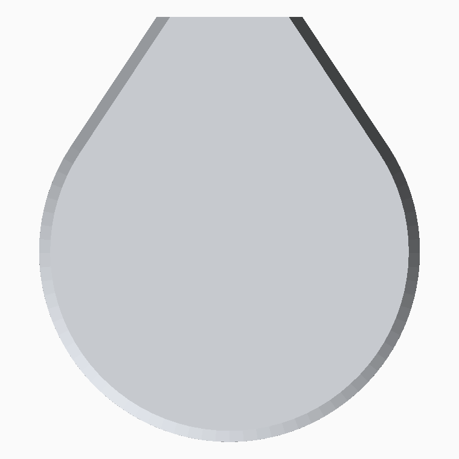
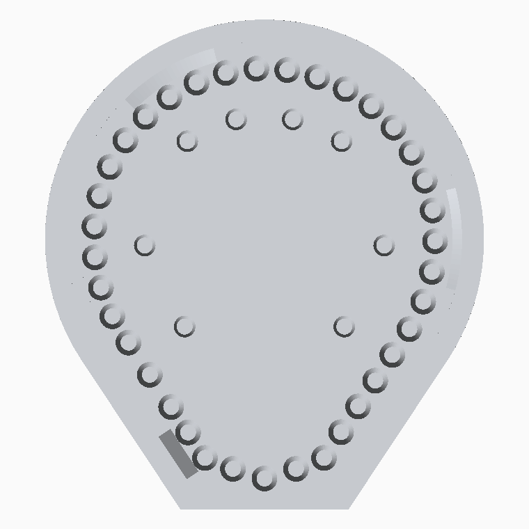

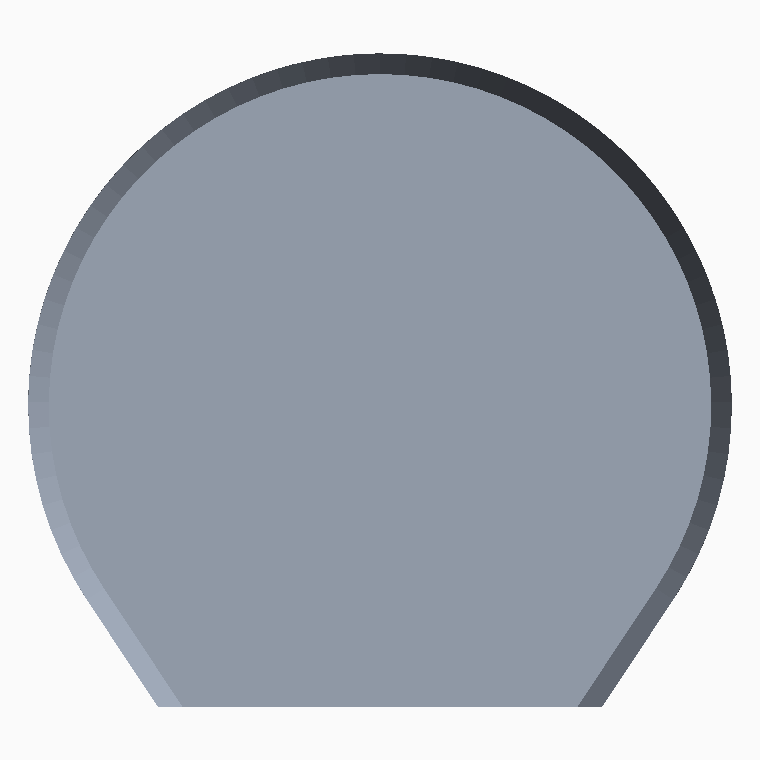
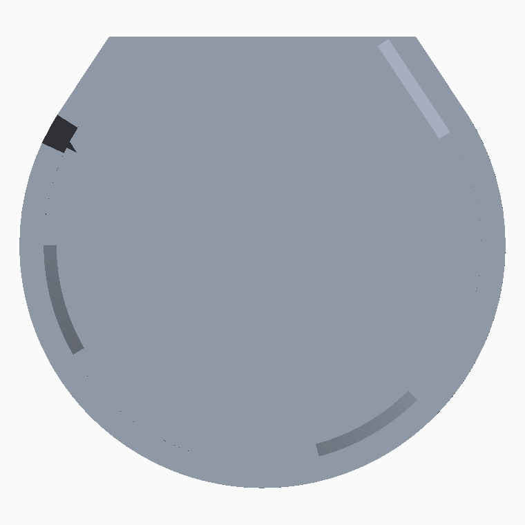


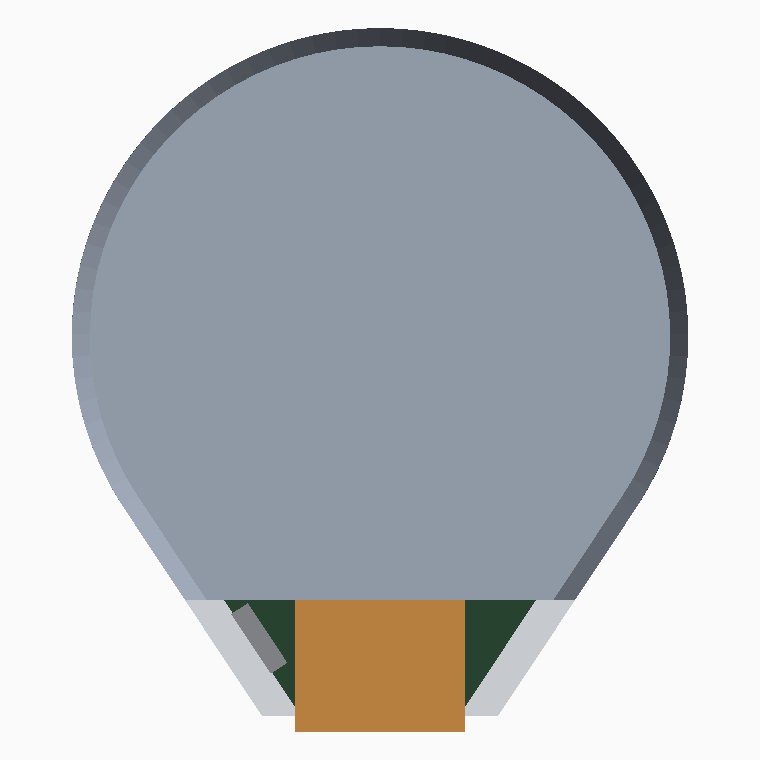
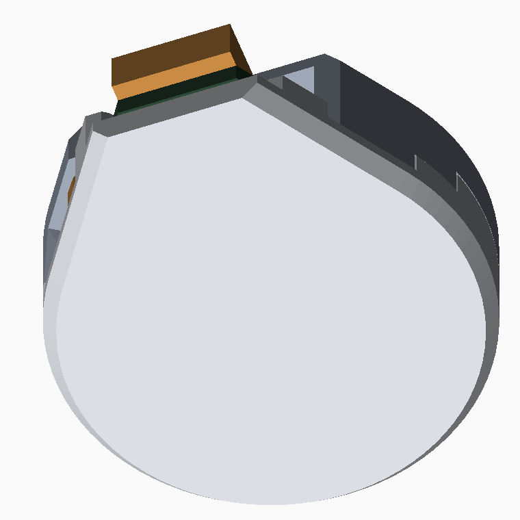
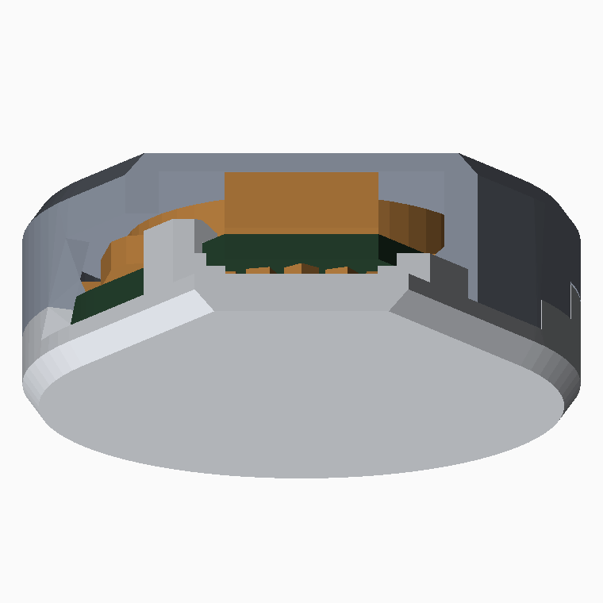
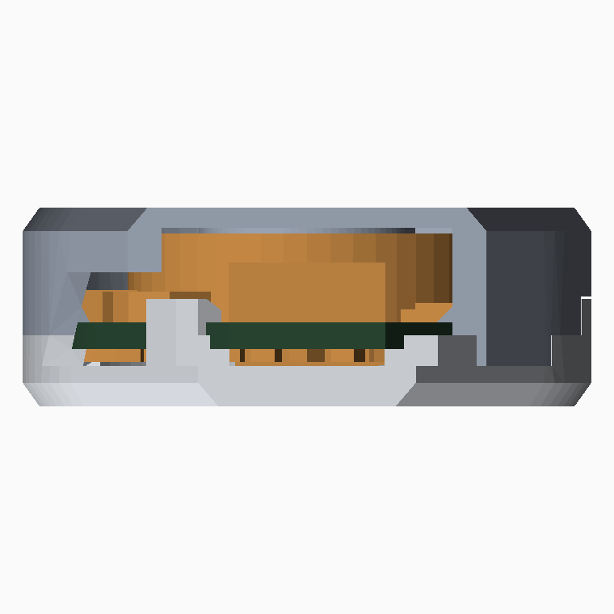
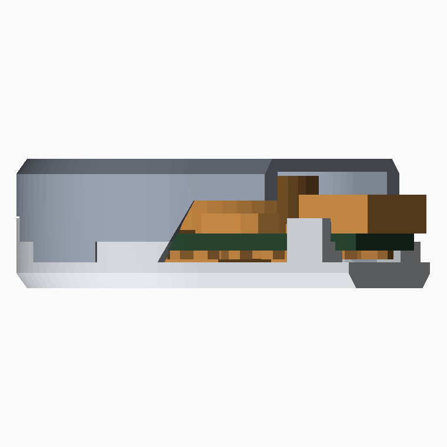
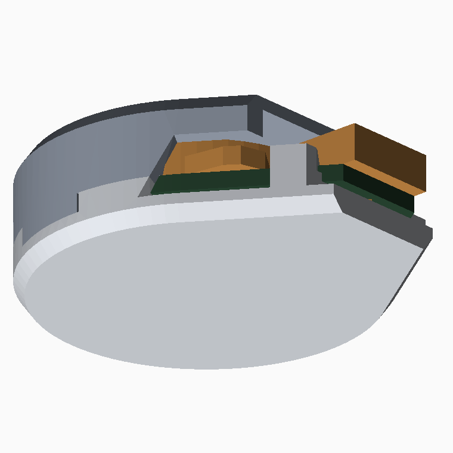

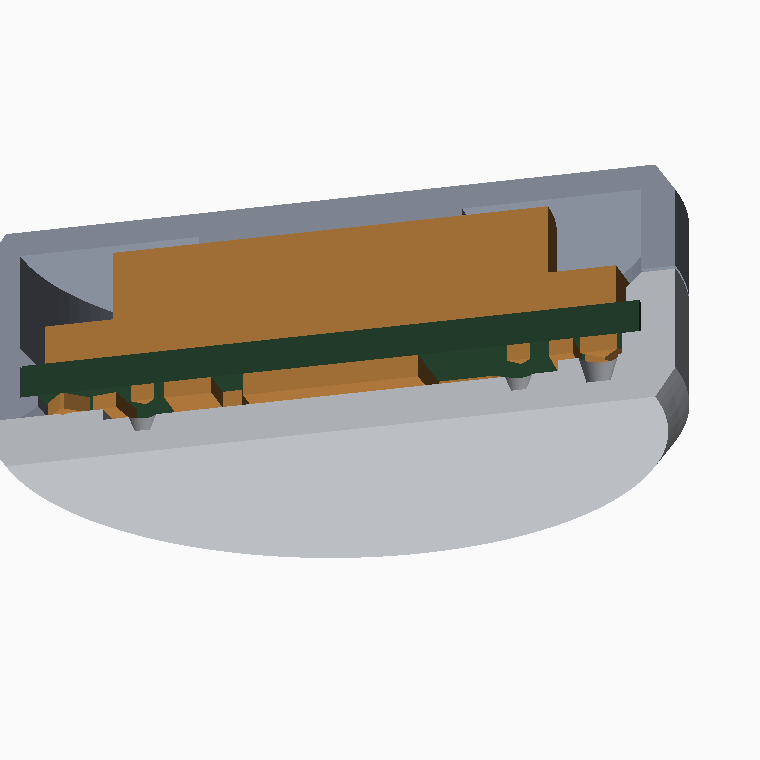
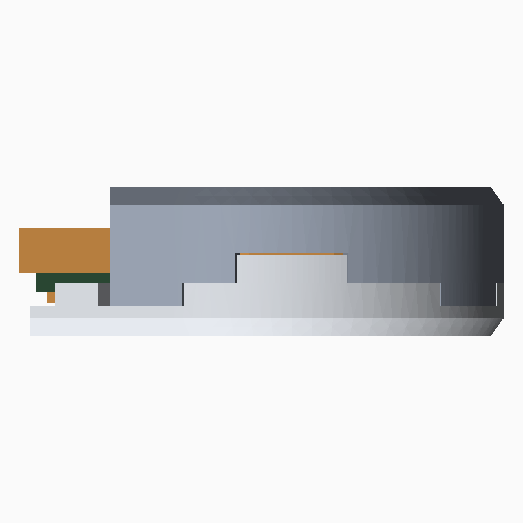
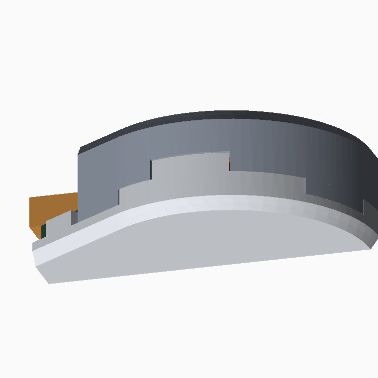
front = LED diffuser · rear = battery cup · alternating clip stations · STEP + STL in out/case/













board 43eadc1: 123 footprints; outline R=15.25 tip 9.4x20.5; perimeter 104.1 mm; battery stack 5.30 mm clip stations (margins are to courtyards already grown by 0.30 mm, so add ~0.30 mm to reach the part body): station 195 rear lip 0.80 mm -> nearest LED9 on F.Cu margin +0.14 mm station 240 front lip 1.00 mm -> nearest TP3 on B.Cu margin +1.27 mm station 300 rear lip 0.80 mm -> nearest LED21 on F.Cu margin +0.25 mm station 0 front lip 0.65 mm -> nearest BT1 on B.Cu margin +0.12 mm station topL front lip 1.00 mm -> nearest J1 on B.Cu margin +0.32 mm station topR rear lip 0.80 mm -> nearest LED32 on F.Cu margin +0.19 mm SW2 thumb scoop: 11.5 mm along the rim, y +5.5 to +15.3, z -4.60 to +1.05 (5.65 mm tall) front: solids=1 shells=1 valid=True into parts 0.000 mm3 into board 0.000 mm3 rear: solids=1 shells=1 valid=True into parts 0.000 mm3 into board 0.000 mm3 half-to-half interference: 0.000 mm3 mount-plug corridor (14 x 8 mm): front 0.000 rear 0.000 mm3 (want 0) tip aperture: connector face y=+21.68, diffuser flap ends y=+21.00 (+0.68 mm clear); below z=+1.05 the tip is fully open clip engagement: front lips under the back face 17.07 mm3, rear lips over the front face 14.50 mm3 earring-case-front: 34.14 x 38.19 x 6.58 mm z[-3.01,+3.57] 2.28 cm3 solids=1 earring-case-rear: 34.15 x 31.73 x 9.56 mm z[-8.50,+1.06] 1.97 cm3 solids=1 assembly: 34.15 x 38.20 x 12.07 mm rear cup: inner floor z=-7.25 outer face z=-8.45
front: bed contact 901 mm2, unsupported overhang 18.80 mm2 (worst 0 deg from horizontal, 4.25 mm off the bed)
by height off the bed: 5.05 mm: 18.8 mm2, 4.25 mm: 0.0 mm2
rear: bed contact 805 mm2, unsupported overhang 21.18 mm2 (worst 0 deg from horizontal, 6.85 mm off the bed)
by height off the bed: 8.45 mm: 21.1 mm2, 6.85 mm: 0.0 mm2, 7.65 mm: 0.0 mm2